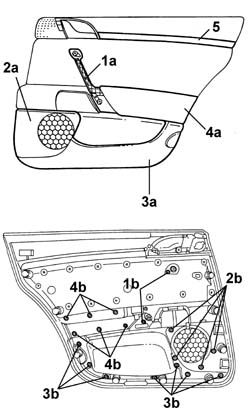
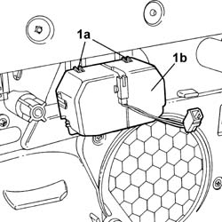
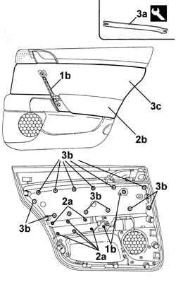

7010E84 Rear door inner panel element (one), left or right - R.R. with panel removed
- Path
- Procedures > 70 FITTINGS > 7010 passenger compartment rear side doors > 7010E REAR SIDE DOOR TRIM > 7010E84 Rear door inner panel element (one), left or right - R.R. with panel removed
- Kind
- repair procedure (removal / refitting; the operation number is the code)
- Applies to
- all engines; all production periods
- Interactive page
- https://sloeber94.github.io/elrnDB-lThss/en/#/111285
Applies to: all engines; all production periods
 Removing
Removing
 Refitting
Refitting- Carry out the operations described below to remove the oddments pocket.
1. Undo the fixing bolts (1b) to remove the inner grip (1a).
2. Undo the fixing bolts (2b) to remove the grille (2a) for the radio system.
3. Undo the fixing bolts (3a) to remove the oddments pocket (3a).
4. Undo the fixing bolts (4b) to remove the armrest (4a).
5. Release the moulding from its housing to remove it using a suitable tool.

Applies to: all engines; all production periods
- Carry out the operations described below to remove the ashtray.
1. Act on the springs (1a) and remove the ashtray (1b).

Applies to: all engines; all production periods
- Carry out the operations described below to remove the inner panel trim.
1. Undo the fixing bolts (1a) and remove the inner grip (1b).
2. Undo the fixing bolts (2a) and remove the armrest (2b).
3. Release the retaining springs (3b) using the tool (3a) and remove the inner panel trim (3c).
 | Description | Code | Function |
|---|---|---|---|
3a | Knife | 1.878.077.000 | Removing rear door inner panel cover |

Applies to: all engines; all production periods
Refitting
Removing- To fit the oddments pocket, position the component and secure it using the bolts.
- To fit the inner grip, position the component and secure it using the bolts.
- To fit the inner panel trim, position the component and secure it using the springs, then fit the inner grip and the armrest.
- To fit the moulding, fit the component in position until the click of the retaining springs is heard.
- To fit the ashtray, fit the component in position until the click of the retaining springs is heard.
- To fit the radio system grille, position the component and secure it using the bolts.
- To fit the armrest, position the component and secure it using the bolts.